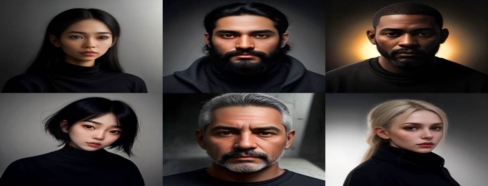
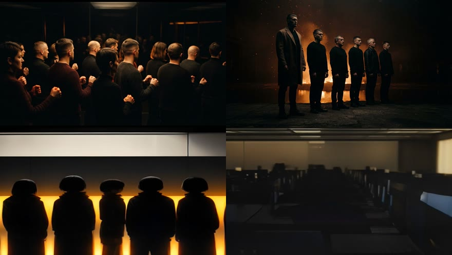

A 79-bar, 3:21 music video cut to the track's own tempo grid. 64 panels, 59 of them image-to-video shots. Every frame is generated. This page is the live state of the build — what is shot, what is carrying the slot on a beat montage, and exactly what is blocking the rest.
Full-length assembly, rebuilt every time a batch lands. Live shots sit in their slots. Every slot without one now cuts to a different picture on every beat — 0.64 s a card, each card with its own push or pull — so nothing in the cut is a frozen frame except the five title panels.
| Container | — |
| Gaps / black frames | 0 — every slot filled, audio locked to the bar grid |
| Honest status | Not deliverable. —. The montage slots move and cut on the beat, but generated motion is still the bar and 19 slots have not cleared it. |
Every cut point is derived, not eyeballed. The track was transcribed, beat-tracked and locked to one formula — so a panel boundary can never drift off the music.
bar(n) = −0.0734 + n × 2.55021 s
15 sections, width proportional to duration. The green underline is how much of that section is shot.
Click any panel for its lens, movement, bar position and the exact generation prompt. Live panels play their clip in place.
| Stage | Output | State |
|---|---|---|
| 1 · Transcribe | Word-level transcript, lyric grid | Done |
| 2 · Tempo lock | BPM, bar origin, 79-bar grid | Done |
| 3 · Section map | 15 sections by energy + drum density | Done |
| 4 · Storyboard | 64 panels — cast, lens, size, movement | Done |
| 5 · Characters & plates | Architect character board, 64 keyframe plates | Done |
| 6 · Image-to-video | 59 clips from their approved plates | — — capacity blocked |
| 7 · GFX composite | 5 title/logo panels built in ffmpeg | Waiting on 6 |
| 8 · Final assembly | Graded master, 16:9 1280×720 @ 24 | Waiting on 6 |
Nothing here is a code fault. Every generation lane is either out of allowance or ruled out on quality. This is the only thing standing between the current cut and a finished video.
Produced 6 clips in a 12-minute burst, then the Create button disappeared entirely — that absence is the credit wall. Re-probed 8 hours later at the cheapest 4-second setting: still gone. The pool is empty, not the config.
This lane delivered: Seedance 2.0 Mini at 480p/16:9 is genuinely free and produced most of the clips in the cut. It is down for a different reason now — the session cookie expired 2026-08-19 16:56 and all three Artlist profiles are signed out. Signing in is a human click, never the agent's. 19 shots are queued and fire the moment it is back.
Its unlimited pool reads available: false, so every generation here would spend credits. Paid spend has never been authorised on this project, so this is not a route.
Free and unmetered, but the motion is visibly weaker and it would carry 49 of 64 shots. Called off — the look is not worth the throughput.


Free, unblocks 16 panels' worth of re-plating.
Paid spend has never been authorised on this project. Waiting is free; it just takes cycles.
Every other stage is either finished or purely downstream of shot generation.